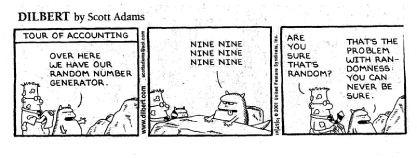

Fall 2017
Elizabeth S. Allman
MWF 2:15 - 3:15
Chapman 106
Office Hours: M 3:15 - 4:15, T 8:30 - 9:30, W 1:00 - 2:00 Chapman 308B

| Dates | Due date | Problems | Readings and Handouts | |
| Oct 4-11 | 6 | Wed Oct 11 | Section 3.8: 134
Section 3.11: 167, 171, 177 Section 4.1: 1,3,5,7 |
Finish Chapter 3, skipping 3.10. Start Chapter 4.
|
| Sept 25-Oct 4 | 5 | Wed Oct 4 | Section 3.7: 102, 103, 105, 107, 109, 113
Section 3.8: 121, 122, 125, 127, 131, 135, 139, 141 Section 3.9: 145, 147, 149, 151, 153, 155 |
Finish Chapter 3
|
| Sept 20-27 | 4 | Wed Sept 27 | Section 3.3: 13, 15, 17, 21, 23, 25
Section 3.4: 35-53 odd, 56, 57, 61 Section 3.5: 66a, 66b answer only the question about the max, 67-75 odd, 79 81, Section 3.6: 92, 93, 95, 97 |
Chapter 3.4-3.8
|
| Fri Sept 22 | R lab 2
Data for R lab 2 File for cutting and pasting or writeup (optional) |
|
||
| Sept 11-20 | 3 | Wed Sept 20 | Section 2.8: 87, 89, 91, 93, 95, 97, 101
Section 2.9: 111, 112, 113, 115, 117, 120, 121 Section 2.10: 125, 129, 133 Section 2.11: 139 Section 3.2: 1, 3, 5, 9, 11 |
Finish Chapter 2
Chapter 3.1-3.3 |
| Sept 6-13 | 2 | Wed Sept 13 | Section 2.4: 9, 10, 13, 15, 17
Section 2.5: 27, 29, 33 Section 2.6: 35, 37, 41, 43, 49, 51, 53, 55, 57, 59, 61 (almost the famous birthday problem), 63 Section 2.7: 73, 75, 77, 83 |
2.5-2.7
Poker hand probabilities Lab 1 Solutions. |
| Aug 28-Sept 6 | 1 | Wed Sept 6 | Chapter 1: 1, 5, 7, 9, 19, 21, 22, 27, 29, 37 Chapter 2: 1, 7 R lab 1 data for R lab 1 R lab 1 tex file if wanted |
Chapter 1, 2.1-2.4 |